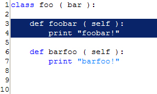
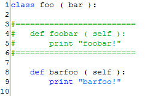

PyDev User Manual
Editor :: Block Comment
Block Comments are lines of code with the # token preceding them, and with separators to make them stand out.
From this:

To this:

In order to make block comments, highlight a body of text in the editor, and do one of the following:
- Source Menu -> Add Comment Block
- Right-Click -> Source -> Add Comment Block
- Ctrl+4
You may remove a selected comment block with:
- Source -> Remove Comment Block
- Right-Click -> Source -> Remove Comment Block
- Ctrl+5
The separator string (the =====) can be changed in the Preferences page.